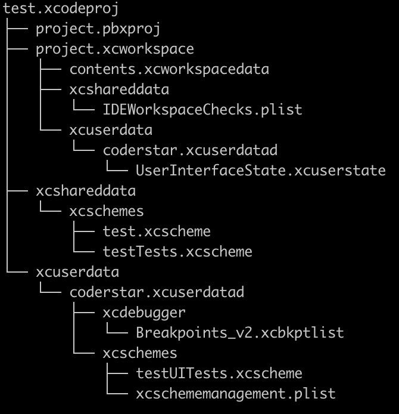
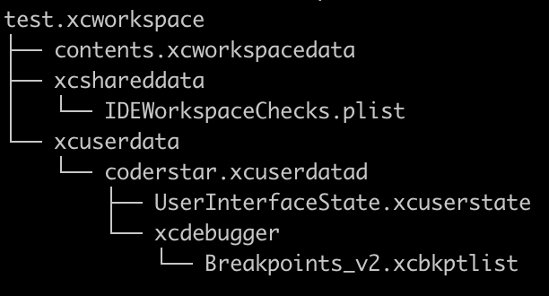

前言
Hi Coder，我是 CoderStar！
Xcode 有非常多的概念，比如：workspace、project、target、scheme 等，这些概念之间都存在一定的依赖关系，了解这些关系有利于我们对 Xcode 工程体系的一个理解，后续使用xcodebuild命令进行操作时也能对参数的使用一清二楚。
workspace
project
target
build configuration
属于 project 范围
scheme
Xcode Scheme 定义一组操作，默认有：Build、Test、Launch、Profile、Analyze、Archive。每一种操作定义了一系列的指令，包括：target、build configuration、arguments、options 等等，这些参数、指令共同构成一个构建方案，从而用于构建一个或多个 target。
我们可以拥有任意数量的 scheme，但一次只能激活一个 scheme，对应在 Xcode 的右上角我们每次只能选中一个 scheme。
多环境打包
多环境打包主要分成三种方式
- 多 target
- 多 configuration
- 多 xconfig
不管是多 target 还是多 configuration，我们都需要新建 scheme，只不过前者建立一个 scheme，然后选择一个新的 target、旧的 configuration，而后者是选择一个已有的 target，一个新的 configuration。
多 Target
这种方式如果项目中有扩展程序，就满足不了需求，因为 App 宿主程序与扩展程序均为一个 target。
workspace, project, target, build configuration, scheme
想 build 出一个 product，需要知道有哪些文件需要 build，build 的时候需要哪些构建参数。
target 指定了需要哪些文件，build configuration 指定了使用哪些构建参数。所以我们 build 的时候就需要一个特定的 target 和一个特定的 build configuration，这时候 scheme 就起作用了，scheme 可以理解为工程编译运行时的配置文件, 它可以指定 build 的时候用哪个 target 和 build configuration，project 里可以有多个 target 和多个 build configuration，同时 workspace 里可以有多个 project，这些 project 的编译输出文件同在一个编译输出目录下，即整个 workspace 维度的。
所以如果需要编译不同的文件，那么需要不同的 target；如果编译的文件都相同，只是配置文件不同，如 plist、entitlements 文件等，那么只需不同的 build configuration 即可。如果既要编译不同的文件，又要不同的配置文件及编译参数，那么需要 target 和 build configuration 混合使用。所有 build 设置相关的都可以在 build configuration 中单独设置。
文件
.xcodeproj

上图我们可以看到.xcodeproj的文件结构，
project.pbxproj：想必大家都知道，我们平时在合并分支时经常会解决这个文件的冲突，也是最复杂的一个文件，里面记录代码的结构等信息。project.xcworkspace：这个位置的.workspace就不多介绍了，下面统一介绍。xcshareddata：主要包括 shared 出去的 scheme；xcuserdata：断点数据 (如果未打过断点，则不会有该文件，如果打过全取消了，该文件也不会被删除，只是内容发生变化)，未 shared 的 scheme。该文件夹一般是需要被 git 进行忽略的；
.xcworkspace

contents.xcworkspacedata：拥有的 project 等配置；xcshareddata：里面会包含对 IDE 的版本检查，以及 SPM 保存的数据。xcuserdata：断点数据 (如果未打过断点，则不会有该文件，如果打过全取消了，该文件也不会被删除，只是内容发生变化)，窗口设置数据；（UserInterfaceState.xcuserstate，二进制类型），该文件夹一般是需要被 git 进行忽略的；
路径
$(PROJECT_DIR)代表的是整个项目，一般是.xcodeproj文件所在目录${SRCROOT}包含定义 Target 的 Project 的路径，一般情况下和$(PROJECT_DIR)是等价的${PROJECT_FILE_PATH}表示 project 的当前路径，相当于$(PROJECT_DIR)/$(PROJECT_NAME).xcodeproj，见下图：${PODS_ROOT}代表的是 pod 目录，是 cocoapods 通过 UserDefine 自定义的$(inherited)继承上一级（Project）或依赖项的配置。通过 CocoaPods 集成的项目，$(inherited) 将会包含 Pods_xxxx.xcconfig 中的配置
在设置路径时还有下面两个选项，表示是否递归寻找子目录
- non-recursive：非递归
- recursive：递归
相对路径
- @executable_path，这始终指向产品可执行二进制文件路径，AppName.app/Contents/MacOS/AppName.
- @loader_path，这取决于哪个是加载器。例如，我的 Vivi.app 加载 ViviSwiften.framework，然后由 ViviSwiften.framework 链接的 dylib 可以获得两个变量 @loader_path=/path/to/ViviSwiften.framework/Versions/A/，以及 @executable_path=/path/to/Vivi.app/Contents/MacOS/.
- @rpath，这只是一个存储一些预定义路径的路径。可以在 Xcode target > Build Setting > Runpath Search Path 它。通常包括 @executable_path/../Frameworks，@executable_path/../Frameworks and @loader_path/Frameworks，@executable_path/../Frameworks 和 @loader_path/../Frameworks 测试目标的框架。
最后
要更加努力呀！
Let’s be CoderStar!
Xcode Concepts
Xcode Concept 学习笔记
理解 Xcode 中的各种概念
理解 Xcode 中的各种文件
https://looseyi.github.io/post/sourcecode-cocoapods/08-cocoapods-xcodeproj/